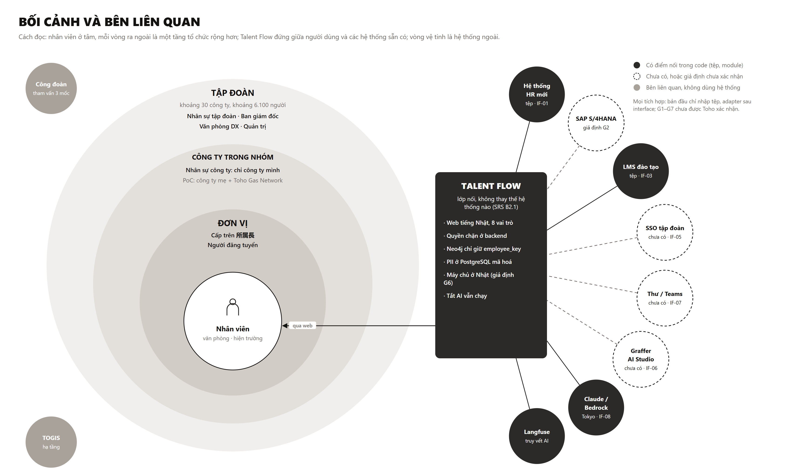
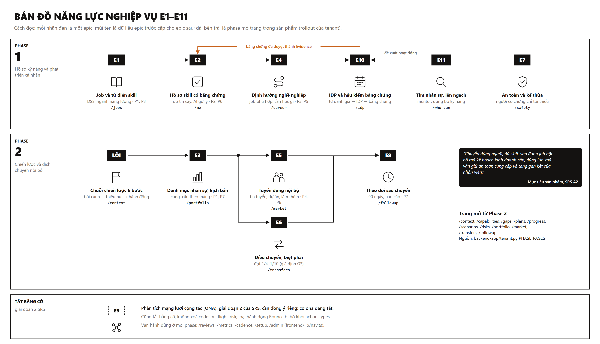
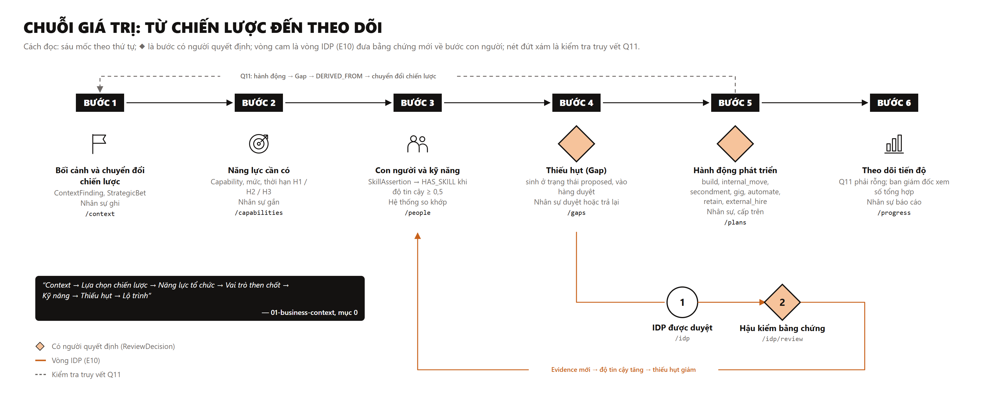
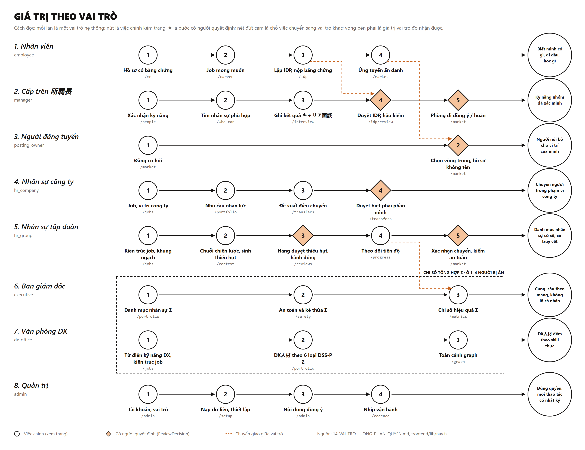
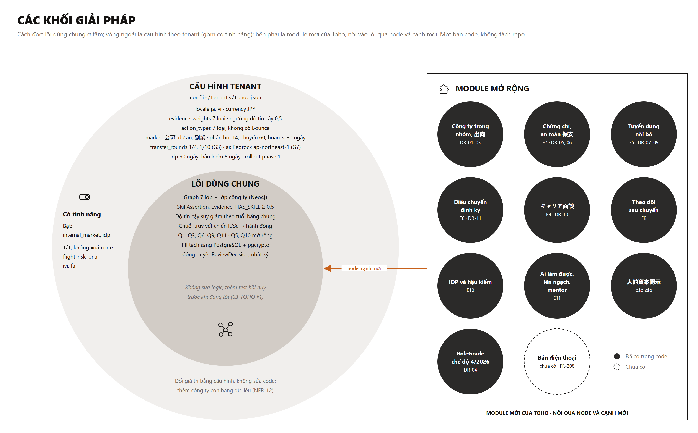
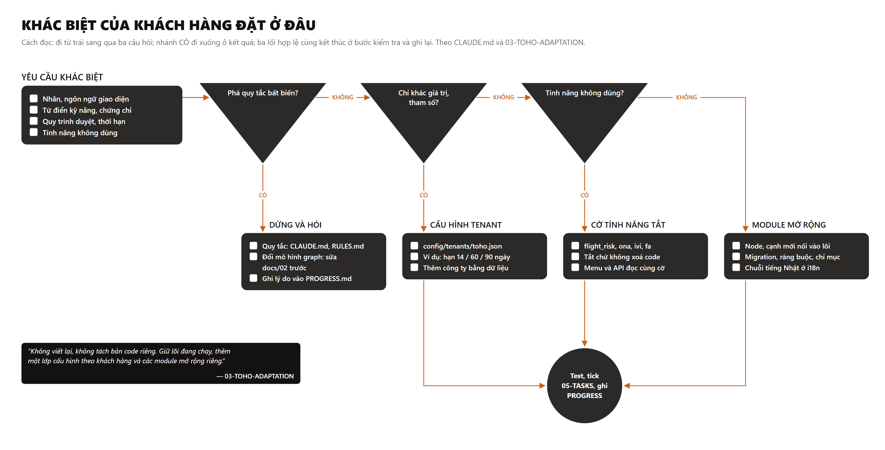
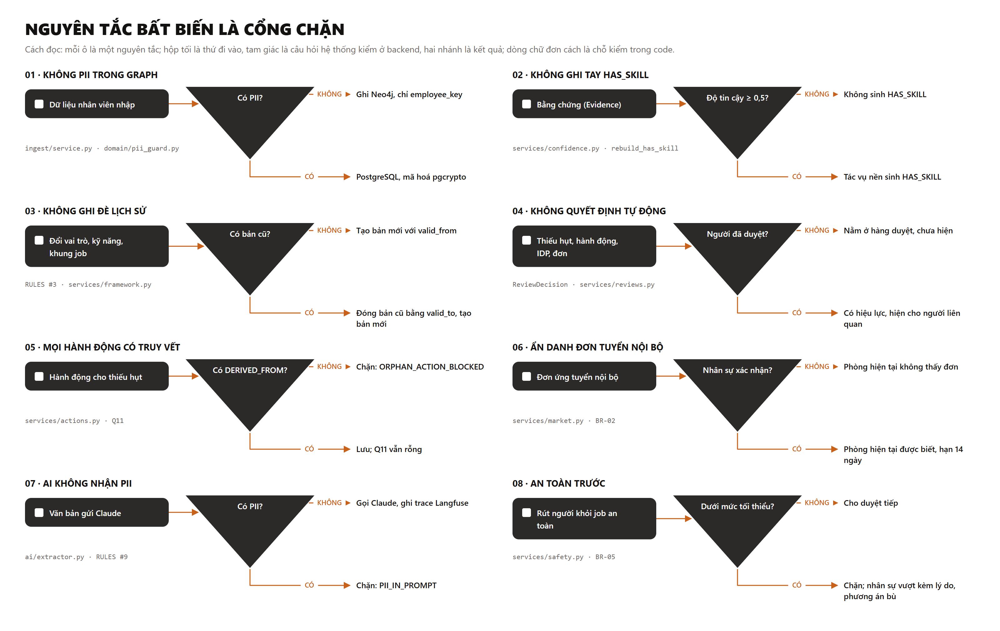
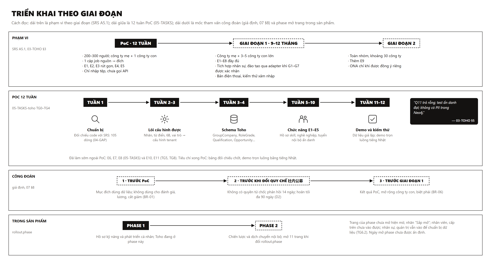
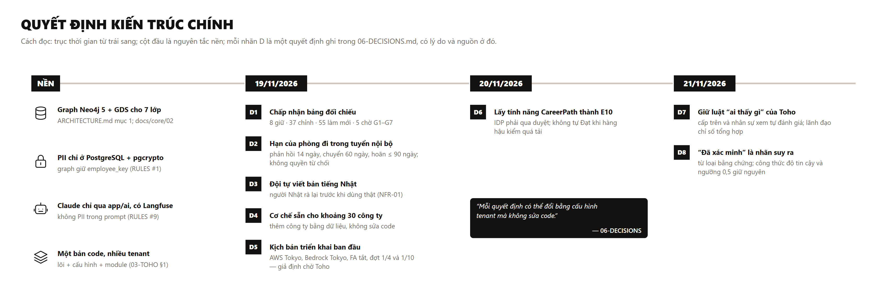

Kiến trúc giải pháp — Talent Flow cho nhóm Toho Gas
Ngày 23/11/2026. Bản nháp, viết từ tài liệu và code trong repo tới ngày này. Chưa kiểm chứng với Toho Gas. Thay đổi sau ngày viết (tới 26/11/2026), chưa vẽ lại hình: sản phẩm chạy theo mô hình nhiều workspace (toho, brg; ARCHITECTURE.md mục 8); có lớp thiết kế tổ chức bật theo workspace (mục 9); giao diện chuyển sang một luồng bốn bước với trang "Hôm nay" (mục 10). Chuỗi sáu bước ở mục 4 vẫn là chuỗi suy luận của dữ liệu; nó không còn là cách xếp menu. Mức chi tiết: nghiệp vụ và giải pháp (ai dùng, khối nào làm gì, luật nào không được phá, triển khai theo thứ tự nào). Chi tiết kỹ thuật xem 02-KIEN-TRUC-KY-THUAT.md; dữ liệu (graph, PostgreSQL, dòng dữ liệu) xem 03-KIEN-TRUC-DU-LIEU.md. Nguồn gốc: ARCHITECTURE.md, docs/core/02-workforce-graph-architecture.md.
Cách đọc. Mỗi mục có hình trước, chữ ngắn sau. Nguồn ghi trong ngoặc, theo tên file. Chữ giả định đánh dấu điều chưa được Toho Gas xác nhận (G1–G7 trong SRS và kịch bản 07-DEPLOYMENT-SCENARIO.md). Hình vẽ theo bốn kiểu thể hiện của bộ kit tools/diagrams/kit.py: bản đồ quy trình có mốc, luồng công việc, hệ sinh thái đồng tâm, hành trình nhiều làn.
| # | Hình | Kiểu | Nội dung |
|---|
| 2 | img/gp-boi-canh.png | Đồng tâm | Tầng tổ chức, Talent Flow, hệ thống ngoài |
| 3 | img/gp-ban-do-nang-luc.png | Bản đồ có mốc | Epic E1–E11 theo phase mở trang |
| 4 | img/gp-chuoi-gia-tri.png | Bản đồ có mốc | Sáu bước chiến lược → theo dõi, vòng IDP, Q11 |
| 5 | img/gp-gia-tri-vai-tro.png | Hành trình nhiều làn | 8 vai trò: việc chính, bước duyệt, giá trị |
| 6 | img/gp-khoi-giai-phap.png | Đồng tâm | Lõi, cấu hình tenant, cờ tính năng, module |
| 6 | img/gp-dat-khac-biet.png | Luồng công việc | Khác biệt của khách hàng đặt vào khối nào |
| 7 | img/gp-nguyen-tac.png | Luồng công việc | 8 nguyên tắc bất biến là cổng chặn ở backend |
| 8 | img/gp-trien-khai.png | Bản đồ có mốc | PoC, giai đoạn 1, 2; công đoàn; phase sản phẩm |
| 9 | img/gp-quyet-dinh.png | Bản đồ có mốc | Nguyên tắc nền và quyết định D1–D8 |
1. Mục đích và phạm vi
Mục tiêu sản phẩm (SRS A2): giúp nhóm Toho Gas chuyển đúng người, đủ skill, vào đúng job nội bộ mà kế hoạch kinh doanh cần, đúng lúc, mà vẫn giữ an toàn cung cấp và tăng gắn kết của nhân viên.
Vấn đề cần giải (SRS A1): người cho job mới phải đến từ nhân viên đang có (nghỉ việc khoảng 2%/năm, không sa thải).
| Mã | Vấn đề | Epic |
|---|
| P1 | Cầu không rõ: cần bao nhiêu người, skill gì, job nào, khi nào | E1, E3 |
| P2 | Cung không thấy: nhân viên thực sự có skill gì | E2 |
| P3 | Học không nối với job đích | E1, E4 |
| P4 | Ma sát khi chuyển giữa hai phòng | E5, E6 |
| P5 | Nhân viên không biết mình có thể đi đâu | E4 |
| P6 | Ranh giới công ty con | E2, E5, E6 |
| P7 | Không đo kết quả sau khi chuyển | E3, E8 |
Phạm vi. Nhóm Toho Gas (công ty mẹ và khoảng 30 công ty con). PoC: 200–300 người, công ty mẹ và 1 công ty con (SRS A5.1). Ngoài phạm vi (SRS A5.3): tính lương, đánh giá hiệu suất, xếp bậc; tuyển dụng bên ngoài; mọi chức năng nhằm cắt giảm hoặc xếp hạng để loại người; điều chuyển tự động; chỉ số IVI; nền tảng học tập mới.
2. Bối cảnh và bên liên quan

- Talent Flow là lớp nối, không thay thế hệ thống nào của Toho Gas (SRS B2.1). Người dùng vào qua web tiếng Nhật; quyền chặn ở backend (
14-VAI-TRO-LUONG-PHAN-QUYEN.md, phần đầu). - Bốn tầng người dùng. Đơn vị: cấp trên trực tiếp, người đăng tuyển. Công ty: nhân sự công ty, chỉ thấy công ty mình. Tập đoàn: nhân sự tập đoàn, ban giám đốc, Văn phòng DX, quản trị (SRS B2.2;
14-… mục 1). - Bên liên quan không dùng hệ thống: công đoàn (tham vấn 3 mốc), TOGIS (hạ tầng, tích hợp). Cả hai là giả định của kịch bản
07-DEPLOYMENT-SCENARIO.md mục 1, 8.
| Hệ thống ngoài | Giao diện | Có trong code | Xác nhận với Toho |
|---|
| Hệ thống nhân sự (có thể đổi cùng chế độ mới 4/2026) | IF-01 vào, IF-02 ra | Nhập tệp CSV/Excel, adapter sau interface | Giả định, chưa rõ hệ thống (07 §2) |
| SAP S/4HANA | IF-01, IF-02 | Không | Giả định G2: tài chính đã lên SAP, nhân sự chưa rõ |
| Hệ thống đào tạo (LMS, e-learning) | IF-03, IF-04 | Nhập tệp khoá học và kết quả | Giả định |
| Xác thực tập đoàn (SSO) | IF-05 | Không (đang dùng JWT nội bộ) | Chưa có |
| Thư, Teams | IF-07 | Chưa gửi thật: thông báo trong ứng dụng; email chỉ xếp vào hộp thư đi (services/notify.py) | Chưa có |
| Graffer AI Studio | IF-06 | Không | Chưa có |
| Claude qua Amazon Bedrock, vùng Tokyo | IF-08 | Có (backend/app/ai/), tắt AI vẫn chạy | Giả định G7; gọi thật cần khoá và sự đồng ý của chủ dự án |
| Langfuse | — | Có: thiếu cấu hình Langfuse thì không gọi AI | Bản tự host trong Nhật là giả định (07 §7) |
Nguồn: SRS B5, 07-DEPLOYMENT-SCENARIO.md, 11-DANH-GIA-DAP-UNG.md mục 4, backend/app/ai/extractor.py.
3. Bản đồ năng lực nghiệp vụ (E1–E11)

- Epic E1–E9 lấy từ SRS A5.2. E10 (IDP và hậu kiểm) bổ sung 20/11/2026 (
06-DECISIONS.md D6, 10-E10-IDP.md). E11 (tính năng từ mockup CareerDev) bổ sung 21/11/2026 (D8, 15-E11-CAREERDEV.md). - Dải bên trái là phase mở trang trong sản phẩm (
rollout.phase), không phải giai đoạn dự án (xem mục 8). Trang mở từ Phase 2 liệt kê trong backend/app/tenant.py (PHASE_PAGES), khớp frontend/lib/nav.ts (PHASE2; menu thế hệ 2 ở frontend/lib/flow.ts dùng lại danh sách này). - Hai vòng dữ liệu chính: E1 → E2 → E4 → E10 rồi bằng chứng đã duyệt quay về E2; chuỗi chiến lược → E3 → hai kênh dịch chuyển E5, E6 → E8.
| Epic | Tên | Vấn đề | Trang chính | Phase mở trang |
|---|
| E1 | Kiến trúc job và từ điển skill | P1, P3 | /jobs | 1 |
| E2 | Hồ sơ skill có bằng chứng | P2, P6 | /me | 1 |
| E3 | Danh mục nhân sự động và kịch bản | P1, P7 | /portfolio, /scenarios | 2 |
| E4 | Định hướng nghề nghiệp | P3, P5 | /career, /interview | 1 |
| E5 | Tuyển dụng nội bộ (tin tuyển, dự án, làm thêm nội bộ) | P4, P6 | /market | 2 |
| E6 | Điều chuyển định kỳ và biệt phái | P4, P6 | /transfers | 2 |
| E7 | An toàn và kế thừa các job an toàn | an toàn | /safety | 1 |
| E8 | Theo dõi sau chuyển, báo cáo | P7 | /followup | 2 |
| E9 | Phân tích mạng lưới (ONA) | P2 | — | Tắt (cờ ona), giai đoạn 2 SRS |
| E10 | IDP và hậu kiểm bằng chứng | P3 | /idp, /idp/review | 1 |
| E11 | Ai làm được, lên ngạch, mentor, dựng bộ kỹ năng | P2, P5 | /who-can, /career/next, /mentors | 1 |
Cột vấn đề của E10, E11 là cách đọc của tài liệu này (hai epic bổ sung không có trong ma trận truy vết của SRS).
4. Chuỗi giá trị: từ chiến lược đến theo dõi

- Chuỗi này là nguyên lý nền của giải pháp: nhân sự không tự đặt mục tiêu; mục tiêu là năng lực mà bối cảnh kinh doanh đòi hỏi (
docs/core/01-business-context.md mục 0). - Mỗi bước là một đường đi thật trong graph (
docs/core/02-… mục 1):
(ContextFinding)-[:JUSTIFIES]->(StrategicBet)-[:REQUIRES_CAPABILITY]->(Capability)
(Capability)-[:REQUIRES_SKILL]->(Skill)<-[:REQUIRES]-(Role)<-[:INSTANCE_OF]-(Position)<-[:HOLDS]-(Employee)
(Employee)-[:HAS_SKILL]->(Skill)
(Employee)-[:HAS_GAP]->(Gap)-[:FOR_SKILL]->(Skill)
(DevelopmentAction)-[:CLOSES]->(Gap)-[:DERIVED_FROM]->(ContextFinding)
- Bước 3 chỉ dùng kỹ năng có độ tin cậy ≥ 0,5. Bước 4 và 5 có người quyết định (
ReviewDecision). Loại hành động của Toho: build, internal_move, secondment, gig, automate, retain, external_hire; không có Bounce (SRS DR-15, config/tenants/toho.json). - Vòng IDP (E10) khép phần "đo kỹ năng thật": IDP được duyệt → nộp bằng chứng → hậu kiểm → bằng chứng thành
Evidence → độ tin cậy tăng → thiếu hụt giảm (10-E10-IDP.md mục 1). - Q11 kiểm mọi hành động đi ngược được về chuyển đổi chiến lược; kết quả phải rỗng.
- Các trang của chuỗi mở từ Phase 2 (
14-… mục 3.2).
5. Giá trị theo vai trò

| Vai trò | Mã | Giá trị nhận được | Không được làm (rút gọn) |
|---|
| Nhân viên | employee | Biết mình có gì, có thể đi đâu, cần học gì; ứng tuyển không ngại cấp trên | Xem hồ sơ người khác |
| Cấp trên trực tiếp | manager | Kỹ năng của nhóm đã xác minh; tìm người theo kỹ năng | Tự duyệt cho mình; thấy đơn của cấp dưới trước khi nhân sự xác nhận |
| Người đăng tuyển | posting_owner | Người nội bộ cho vị trí của mình | Đăng cho đơn vị khác; duyệt chuyển người |
| Nhân sự công ty | hr_company | Quản lý nhân sự công ty mình, tham gia thị trường cấp nhóm | Xem, đề xuất, duyệt ngoài công ty mình |
| Nhân sự tập đoàn | hr_group | Danh mục nhân sự có số, phương án điều chuyển dựa trên skill | — (vẫn qua hàng duyệt, có nhật ký) |
| Ban giám đốc | executive | Cung–cầu theo mảng và kịch bản | Xem hồ sơ cá nhân |
| Văn phòng DX | dx_office | Nhân lực DX đếm theo kỹ năng thực, so mục tiêu 200 (dx_target) | Xem hồ sơ cá nhân |
| Quản trị | admin | Hệ thống chạy đúng quyền, mọi thao tác có nhật ký | Xem hồ sơ cá nhân |
Ba chỗ chuyển giao (nét đứt cam): nhân viên lập IDP → cấp trên duyệt; nhân viên ứng tuyển → người đăng tuyển chọn từ hồ sơ không tên; nhân sự tập đoàn theo dõi tiến độ → ban giám đốc xem số tổng hợp. Ban giám đốc và Văn phòng DX chỉ thấy số tổng hợp, ô có 1–4 người bị ẩn. Nguồn: 14-… mục 1, 2, 4, 5; frontend/lib/flow.ts (trước 26/11/2026: frontend/lib/nav.ts); SRS A3.
6. Các khối giải pháp và trách nhiệm
6.1 Bốn khối

| Khối | Gồm | Trách nhiệm, cách thay đổi | Nguồn |
|---|
| Lõi dùng chung | Graph 7 lớp; SkillAssertion, Evidence; độ tin cậy có suy giảm; chuỗi truy vết; Q1–Q3, Q6–Q9, Q11; tách PII; cổng duyệt | Giữ nguyên logic; thêm test hồi quy trước khi đụng tới | 03-TOHO-ADAPTATION.md §1, SRS C2 |
| Cấu hình tenant | Ngôn ngữ, trọng số bằng chứng, loại hành động, tham số thị trường nội bộ, đợt điều chuyển, AI, IDP, phase | Đổi giá trị bằng config/tenants/toho.json, không sửa code; thêm công ty con bằng dữ liệu (NFR-12) | backend/app/tenant.py |
| Cờ tính năng | Bật: internal_market, idp. Tắt: flight_risk, ona, ivi, fa | Tắt chứ không xoá code; giao diện và backend đọc cùng cờ | toho.json → features |
| Module mở rộng Toho | Công ty trong nhóm, biệt phái; chứng chỉ và an toàn; tuyển dụng nội bộ; điều chuyển định kỳ; trao đổi nghề nghiệp; theo dõi sau chuyển; công bố vốn con người; RoleGrade; E10; E11 | Nối vào lõi qua node và cạnh mới; migration kèm ràng buộc, chỉ mục; nên thiết kế cấu hình được để đưa ngược về giải pháp chung | SRS C2, C3; DR-01…11 |
Bản điện thoại cho nhân viên hiện trường (FR-208) chưa có, hiện chỉ có bố cục co dãn (11-DANH-GIA-DAP-UNG.md mục 4).
6.2 Khác biệt của khách hàng đặt ở đâu

- Không tách repo, không copy code cho Toho (
CLAUDE.md, quy tắc bất biến đầu tiên). - Yêu cầu trái quy tắc bất biến: dừng lại và hỏi chủ dự án; đổi mô hình graph phải sửa
docs/core/02 và ghi lý do vào PROGRESS.md trước (RULES.md #11, mục 7). - Xong mỗi việc: test, tick
05-TASKS-toho.md, ghi một dòng PROGRESS.md (CLAUDE.md, cách làm giai đoạn Toho).
6.3 Thành phần kỹ thuật
| Thành phần | Trách nhiệm trong giải pháp |
|---|
| Neo4j 5 + GDS | Graph 7 lớp, truy vấn Q1–Q11; chỉ giữ employee_key |
| PostgreSQL 16 + pgcrypto | Dữ liệu định danh mã hoá, đồng ý, nhật ký kiểm toán, hàng duyệt |
| FastAPI | API, ba lớp kiểm quyền: vai trò, phạm vi dữ liệu, luật nghiệp vụ theo bước |
| Celery + Redis | Tác vụ nền: tính độ tin cậy hằng đêm, sinh thiếu hụt, chạy Q11; cache |
| Claude (API hoặc Bedrock) | Gợi ý skill từ văn bản tiếng Nhật; chỉ gọi trong app/ai/; luôn có người xác nhận |
| Langfuse | Truy vết mọi lần gọi mô hình |
| Next.js 14 | Giao diện web, tiếng Nhật mặc định; menu một luồng bốn bước theo vai trò và phase (thế hệ 2, từ 26/11/2026) |
Nguồn: ARCHITECTURE.md mục 1, 2; 14-… phần đầu.
7. Nguyên tắc bất biến

| # | Nguyên tắc | Kiểm ở đâu trong code | Nguồn quy tắc |
|---|
| 01 | Không PII trong graph, kể cả họ tên và cách đọc tên tiếng Nhật | ingest/service.py, domain/pii_guard.py | CLAUDE.md, RULES #1 |
| 02 | Không ghi tay HAS_SKILL; chỉ sinh khi độ tin cậy ≥ 0,5 | services/confidence.py, rebuild_has_skill.cypher | RULES #2 |
| 03 | Không ghi đè lịch sử: đóng bằng valid_to, tạo bản mới | ví dụ services/framework.py | RULES #3 |
| 04 | Không quyết định tự động về con người | ReviewDecision, services/reviews.py | RULES #4, BR-07 |
| 05 | Mọi hành động truy vết được; Q11 phải rỗng | services/actions.py (ORPHAN_ACTION_BLOCKED) | RULES #5 |
| 06 | Ẩn danh đơn tuyển nội bộ thực thi ở backend | services/market.py | CLAUDE.md, BR-02, BR-03 |
| 07 | AI không nhận PII, mọi lần gọi có trace | ai/extractor.py (PII_IN_PROMPT) | RULES #9, NFR-07 |
| 08 | An toàn: không rút người làm đơn vị dưới mức tối thiểu, trừ khi nhân sự ghi lý do và phương án bù | services/safety.py (enforce) | BR-05 |
Các nguyên tắc 01–07 là quy tắc lõi; nguyên tắc 08 là quy tắc nghiệp vụ riêng của Toho. Thêm hai luật hiển thị: không xếp hạng nhân viên với nhau (BR-08); dữ liệu skill và nguyện vọng không dùng cho đánh giá, lương, cắt giảm (BR-01).
8. Triển khai theo giai đoạn

- Hai khái niệm khác nhau. Giai đoạn dự án (PoC, giai đoạn 1, 2) là phạm vi người và chức năng (SRS A5.1). Phase sản phẩm là nhóm trang được mở cho người dùng (
rollout.phase; Toho đang ở Phase 1). Tài liệu chưa nối hai khái niệm này với nhau; ngày mở Phase 2 chưa được ấn định. - PoC 12 tuần theo
05-TASKS-toho.md TG0–TG4. Định nghĩa xong PoC ở 03-TOHO-ADAPTATION.md §5. E6, E7, E8, E10, E11 đã làm sớm ngoài phạm vi PoC. - Giai đoạn 1 mới tích hợp nhân sự và đào tạo qua adapter, sau khi G1–G7 được xác nhận; kèm bản điện thoại, kiểm thử xâm nhập, sao lưu tự động (
05-TASKS-toho.md, mục giai đoạn 1). - Công đoàn: ba mốc tham vấn là giả định của
07-DEPLOYMENT-SCENARIO.md §8.
9. Quyết định kiến trúc chính

| Mã | Quyết định | Ngày |
|---|
| — | Neo4j cho graph; PII ở PostgreSQL mã hoá; Claude chỉ qua app/ai có Langfuse; một bản code nhiều tenant | Nền (ARCHITECTURE.md, RULES.md, 03-TOHO-ADAPTATION.md) |
| D1 | Chấp nhận bảng đối chiếu: 8 giữ, 37 chỉnh, 55 làm mới, 5 chờ G1–G7 | 19/11/2026 |
| D2 | Tuyển nội bộ: phòng đi phản hồi 14 ngày, chuyển chuẩn 60 ngày, hoãn tối đa 90 ngày, không có quyền từ chối | 19/11/2026 |
| D3 | Đội tự viết bản tiếng Nhật; người Nhật rà lại trước khi dùng thật | 19/11/2026 |
| D4 | Cơ chế sẵn cho khoảng 30 công ty; thêm công ty bằng dữ liệu | 19/11/2026 |
| D5 | Kịch bản triển khai ban đầu (AWS Tokyo, Bedrock Tokyo, FA tắt, đợt 1/4 và 1/10) — giả định | 19/11/2026 |
| D6 | Lấy tính năng CareerPath thành E10; IDP phải qua duyệt, không tự Đạt | 20/11/2026 |
| D7 | Giữ luật "ai thấy gì" của Toho | 21/11/2026 |
| D8 | "Đã xác minh" là nhãn suy ra từ bằng chứng; công thức độ tin cậy giữ nguyên | 21/11/2026 |
Lý do và nguồn của từng quyết định: 06-DECISIONS.md.
10. Giả định và câu hỏi mở
| # | Giả định đang dùng (07 §9) | Đổi ở đâu nếu Toho trả lời khác |
|---|
| G1 | Phạm vi toàn nhóm; PoC công ty mẹ + Toho Gas Network | Dữ liệu công ty |
| G2 | Tài chính trên SAP; hệ thống nhân sự chưa rõ → nhập tệp | Adapter nguồn nhân sự |
| G3 | Điều chuyển định kỳ 1/4 và 1/10 | transfer_rounds |
| G4 | Có bậc vai trò, chưa có kỹ năng theo job | Bỏ bước AI nếu đã có |
| G5 | Làm thêm nội bộ thử nghiệm, FA tắt | market.opportunity_types, cờ fa |
| G6 | Dữ liệu lưu tại Nhật, AWS Tokyo | Vùng triển khai |
| G7 | Được gọi AI bên ngoài nếu xử lý ở Nhật và không có PII | Cấu hình ai hoặc tắt AI |
Câu hỏi còn mở của tài liệu này:
- Vai trò của TOGIS và hình thức tham vấn công đoàn là kịch bản của đội, chưa có xác nhận.
- Mốc mở Phase 2 trong sản phẩm so với lịch PoC và giai đoạn 1 chưa được ghi ở đâu.
- Cột "vấn đề" của E10, E11 ở mục 3 là cách đọc của tài liệu này, chưa có trong ma trận truy vết của SRS.
11. Vẽ lại hình
python tools/diagrams/specs/giai_phap.py # sinh docs/kien-truc/img/gp-*.svg
node tools/diagrams/render_svg.mjs docs/kien-truc/img docs/kien-truc/img/gp-*.svg # PNG + kiểm chữ chồng/tràn
Script chỉ dùng bộ kit chung (tools/diagrams/kit.py) và thêm vài biểu tượng riêng ngay trong script. Sửa nội dung hình ở script, không sửa SVG bằng tay.